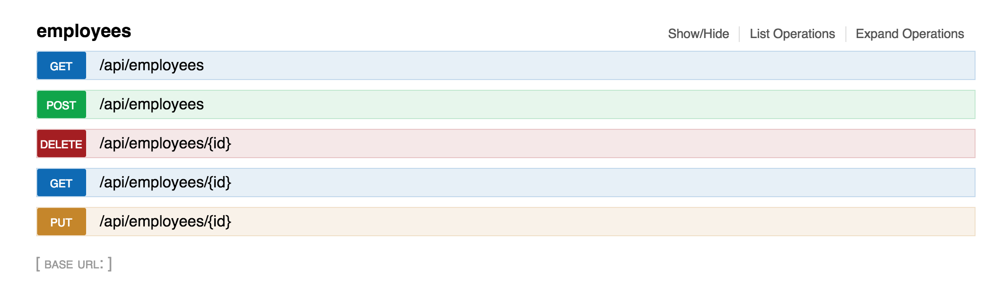

Introduction
Welcome to JSONAPI Suite! This gem is a collection of libraries to enabled quick and easy jsonapi.org-compatible APIs with Ruby on Rails.
If you only have 5 seconds to look at this, we recommend you take a glance at The Basics.
There is also a sample Rails/Ember application to see real-world usage.
Features
- Get pagination, sorting, and sparse fieldsets for free.
- Simple, flexible DSL for providing filters.
- Whitelist available
?includeparamters. - Support for nested relations in POST and PUT requests.
- Works with any ORM, not just ActiveRecord.
- Global error handling compatible with the spec.
- Tries to match vanilla Rails as closely as possible.
- Spec helpers to make integration testing simple and effective.
- Automatically document your API with swagger.
- Type-checking of incoming payloads.
- Corresponding client libraries for Ruby and Ember
- …and more!
Installation
To get up and running, we need to install the gem and include a few modules. We’re making this a manual step so the code is more obvious to an outside developer:
# Gemfile
gem 'jsonapi_suite'
# app/controllers/application_controller.rb
class ApplicationController < ActionController::API
include JsonapiSuite::ControllerMixin
end
This suite is built on top of the mighty jsonapi-rb, hat tip @beauby. Please read up on jsonapi-rb to understand serialization.
Pagination
While not a requirement, you can get out-of-the-box pagination with any gem that adds per and page methods to your ActiveRecord scopes. We recommend kaminari:
# Gemfile
gem 'kaminari'
If you’d prefer to use a different pagination scheme, see the customization section
Reads
The Basics
Let’s write a very simple controller:
class EmployeesController < ApplicationController
jsonapi { }
def index
employees = Employee.all
render_jsonapi(employees)
end
end
The above controller automatically supports:
In other words, we now support these URLs:
http://localhost:3000/api/employees?page[number]=2&page[size]=1http://localhost:3000/api/employees?sort=-namehttp://localhost:3000/api/employees?fields[employees]=name,age
Let’s take a look at what this code does.
jsonapi { } sets up our controller. We’ll go into this in more detail
later.
render_jsonapi is similar to render :json (actually render :jsonapi under-the-hood). However, it’s going to do
some extra work for you. For starters, it will pass relavant arguments -
like which sparse fieldsets were requested - to render for you.
render_jsonapi will also build the appropriate query scope. In this case
we passed it an ActiveRecord scope (Employee.all) that can be chained
off of. In this case we’re automatically adding pagination, sorting, and
select to that scope.
This means you could optionally provide a default scope:
def index
employees = Employee.where(active: true)
render_jsonapi(employees)
end
If you want to lower-level access to the scope we’re building, use
jsonapi_scope. The following is equivalent:
def index
scope = jsonapi_scope(Employee.all)
scope = scope.where(active: true)
# Here we'll pass the actual records instead of
# a scope, the scoping logic has already fired.
render_jsonapi(scope.to_a)
end
Remember Your Serializers!
This documentation assumes you’re roughly familiar with
jsonapi-rb. Note the above code would not output jsonapi unless a SerializableEmployee is defined. By convention, we would put this in app/resources/serializable_employee.rb.
Filtering
Let’s have some fun implementing filtering.
Assume we’re using ActiveRecord and want to filter records based on name and email:
class EmployeesController < ApplicationController
jsonapi do
allow_filter :name
allow_filter :email
end
# ... code ...
end
Congratulations! You can now filter on name, email, or both. In other words, these URLs now work:
/api/employees?filter[name]=Homer/api/employees?filter[email]=chunkylover53@hotmail.com/api/employees?filter[name]=Homer&email=chunkylover53@hotmail.com
What if you want to filter on something that’s not an attribute, like
all names starting with ‘hom’? Simply pass a block to allow_filter and
chain onto your scope:
allow_filter :name_prefix do |scope, value|
scope.where(["name LIKE ?", "#{value}%"])
end
Or maybe we’re using acts_as_taggable_on and want to find all employees with a given tag:
allow_filter :tag do |scope, value|
scope.tagged_with(value, any: true)
end
Filters can be conditional as well. Let’s say we want to allow filtering
on salary if the user is an admin:
allow_filter :salary, if: :admin?
# ... code ...
def admin?
current_user.role == 'admin'
end
Customizing Filters
There are a number of ways to customize filters. To see full documentation, check out jsonapi_compliable.
Includes
Inclusion of related resources (‘sideloading’) is critical to JSON API. We need to do three things to support this feature:
- Render the requested resources in
included. - Make sure our ORM eager loads all relationships to avoid N+1 issues.
- Whitelist certain includes. You probably don’t want to expose your entire object graph, for both performance and security concerns.
The suite will handle this for you. Just add a whitelist:
jsonapi do
includes whitelist: { index: 'tags' }
end
No other code changes are required. Our endpoint now supports
/api/employees?include=tags, putting all Tag resources in included. Any resources requested that have not been whitelisted will be silently dropped.
Nesting includes is also supported:
jsonapi do
includes whitelist: { index: ['tags', { department: 'goals' }] }
end
Would support the endpoint
/api/employees?include=tags,department.goals. This is why the
whitelist is a hash - you may want to limit the whitelist for index
for performance reasons:
jsonapi do
includes whitelist: {
index: :department,
show: ['tags', { department: 'goals' }] }
}
end
Ensure your serializer specifies relationships
The above code assumes relationships are specified in your serializers
as well. Our EmployeeSerializer would need:
belongs_to :department
has_many :tags
Writes
Deserialization
By default, Rails doesn’t work too well with incoming JSON API payloads.
You can fix that with deserialize_jsonapi!:
before_action :deserialize_jsonapi!, only: [:create, :update]
This will transform params from this:
# POST /employees
{
data: {
type: 'employees',
attributes: { name: 'Homer Simpson' }
}
}
To this:
{
employee: {
name: 'Homer Simpson'
}
}
As if it were vanilla Rails. This will also transform any relationships into an accepts_nested_attributes_for-compatible payload:
# POST /employees
{
data: {
type: 'employees',
attributes: { name: 'Homer Simpson' },
relationships: {
department: {
data: {
type: 'departments',
attributes: { name: 'Safety' }
}
}
}
}
}
Becomes:
{
employee: {
name: 'Homer Simpson',
department_attributes: {
{ name: 'Safety' }
}
}
}
raw_params
If you ever need to reference the original parameters, use
raw_params instead of params.
Validations
If our model has a validation error, we need to render a JSON API Error
Object. You can just use
render_errors_for and forget about it:
def create
employee = Employee.new(employee_params)
if employee.save
render_jsonapi(employee)
else
render_errors_for(employee)
end
end
Would output a 422 response code with something like:
{
errors: [
{
code: 'unprocessable_entity',
status: '422',
title: 'Validation Error',
detail: "Name can't be blank",
source: { pointer: '/data/attributes/name' },
meta: {
attribute: :name,
message: "can't be blank"
}
}
]
}
Strong Resources
At this point we could use regular ol’ strong_parameters. That would work. However, two things eventually crop up making this a pain point:
- You end up typing essentially the same stuff when writing your swagger documentation, which violates the DRY principle and leads to code and documentation getting out of sync.
- If your API endpoints accept nested resources, you end up typing the same nested resource attributes across multiple controllers, inevitably adding an attribute it one place but forgetting it in others.
Enter Strong Resources - DRY strong parameters! Instead of code like this:
def employee_params
params.require(:employee).permit \
:name,
:email,
department_attributes: [:name]
end
Write this:
# config/initializers/strong_resources.rb
StrongResources.configure do
strong_resource :employee do
attribute :name, :string
attribute :email, :string
end
strong_resource :department do
attribute :name, :string
end
end
# app/controllers/employees_controller.rb
class EmployeesController < ApplicationController
jsonapi { ...code... }
strong_resource :employee do
belongs_to :department
end
end
# app/controllers/departments_controller.rb
class DepartmentsController < ApplicationController
strong_resource :department
end
We’re defining our resource payloads only once, all in
config/initializers/strong_resources, then referencing those payloads
in each controller. We’ll be able to reference this same metadata when
auto-documenting our API in swagger.
Since this gem uses stronger_parameters underneath the hood, we also get free type checking and type casting. For instance passing a Time for the name attribute would raise StrongerParameters::InvalidParameter.
You can also register custom types:
Parameters = ActionController::Parameters
strong_param :department_enum,
swagger: :string, # the corresponding swagger type
type: Parameters.enum('Safety', 'Sales', 'Accounting')
strong_resource :department do
attribute :name, :department_enum
end
Would throw a StrongerParameters::InvalidParameter when passing a
department name that is not ‘Safety’, ‘Sales’, or ‘Accounting’.
Attributes can be conditional as well:
strong_resource :employee do
attribute :salary, :integer, if: ->(controller) {
controller.current_user.admin?
}
end
Further Reading
To learn more about strong resources, check out the strong_resources libary as well as stronger_parameters, the library it uses under the covers.
Error Handling
We touched on Error Objects in the validations section. Let’s make this work for any random error our application might throw:
class ApplicationController < ActionController::API
# ... code ...
rescue_from Exception do |e|
handle_exception(e)
end
end
Now let’s say we had raise 'foo' somewhere. Our API would return a 500
status code with:
{
errors: [
code: 'internal_server_error',
status: '500',
title: 'Error',
detail: "We've notified our engineers and hope to address this issue shortly.",
meta: {}
]
}
This can all be customized. Let’s say for all
ActiveRecord::RecordNotFound errors we want a 404 response code, with
the error detail providing a custom message:
register_exception ActiveRecord::RecordNotFound,
status: 422,
message: ->(e) { "Couldn't find record with id #{e.id}" }
Would output:
{
errors: [
code: 'not_found',
status: '404',
title: 'Error',
detail: "Couldn't find record with id 123",
meta: {}
]
}
You can register exceptions in ApplicationController, or any subclass
if you want a specific controller to handle a given error differently.
For more customization options, see the jsonapi_errorable gem.
Error Handling in Tests
You may want your test suite to throw errors, instead of returning
this friendly output. Configure this using JsonapiErrorable.disable!:
config.before :each do
JsonapiErrorable.disable!
end
# enable for specific test
it 'does something' do
JsonapiErrorable.enable!
# ... code ...
end
Spec Helpers
Validating verbose JSON API responses in tests can be a pain. We could use something like json_matchers to validate a schema, but we hope to do one better - let’s validate full payloads with a few simple helpers, using full-stack rspec request specs.
Let’s say we’re testing the show action of our employees controller, sideloading the employee’s department. Let’s begin with vanilla RSpec of what the test might look like:
require 'rails_helper'
RSpec.describe 'employees#show', type: :request do
let!(:homer) { Employee.create!(name: 'Homer Simpson') }
let!(:safety) { employee.create_department!(name: 'Safety') }
it 'renders an employee, sideloading department' do
get "/api/employees/#{homer.id}", params: {
include: 'department'
}
# ... code asserting json response ...
end
end
To avoid painful json assertions, let’s use jsonapi_spec_helpers. Start by adding some setup code:
# spec/rails_helper.rb
require 'jsonapi_spec_helpers'
RSpec.configure do |config|
config.include JsonapiSpecHelpers
end
And now to validate the response, we’ll call assert_payload:
assert_payload(:employee, homer, json_item)
assert_payload(:department, safety, json_include('departments'))
assert_payload takes three arguments:
* The name of a payload we’ve defined (we haven’t done this yet).
* The record we want to compare against
* The relevant slice of json. json_item and json_includes are
helpful methods to target the right slice. You can see all helpers in
the documentation for jsonapi_spec_helpers.
OK, so we want to take a record, response JSON, and compare them against something pre-defined. Let’s write those definitions; they look very similar to something you’d write for factory_girl:
# spec/payloads/employee.rb
JsonapiSpecHelpers::Payload.register(:employee) do
key(:name)
key(:email)
timestamps!
end
# spec/payloads/department.rb
JsonapiSpecHelpers::Payload.register(:department) do
key(:name)
end
assert_payload will do four things:
- Ensure keys that are not in the payload definition are not present.
- Ensure all keys in the registered payload are present.
- Ensures no value in a key/value pair is
nil(this is overrideable). - Ensures each key matches the expected record value. In other words,
we’re doing something like
expect(json['email']).to eq(homer.email).
The comparison value can be customized. Let’s say we serialize the
name attribute as a combination of the employee’s first_name and
last_name:
key(:name) { |record| "#{record.first_name} #{record.last_name}" }
You can also customize/override payloads at runtime in your test. Let’s
say we only serialize salary when the current user is an admin. Your
test could look something like:
sign_in(:user)
assert_payload(:employee, homer, json_item)
sign_in(:admin)
assert_payload(:employee, homer, json_item) do
key(:salary)
end
More on spec helpers
For documentation on all the spec helpers we provide, check out the jsonapi_spec_helpers gem.
Swagger
OK, we now have DSLs for both reads (jsonapi { }) and writes
(strong_resources). That means we can introspect those DSLs to
auto-generate our documentation!
Note: I’m going to assume you already have swagger-ui set up, pointing to /api/swagger_docs.json.
We’re going to build on top of swagger-blocks, so let’s go ahead and add our DocsController:
# config/routes
scope '/api' do
resources :docs, only: [:index], path: '/swagger_docs'
end
# app/controllers/docs_controller.rb
class DocsController < ApplicationController
include JsonapiSwaggerHelpers::DocsControllerMixin
swagger_root do
key :swagger, '2.0'
end
end
Now add jsonapi_resource for any endpoint you want to document:
jsonapi_resource '/api/employees', tags: ['employees']
That’s it. The suite will introspect the URL, figure out the correct controller, introspect our DSL metadata and generate all the correct swagger documentation. We’ll even add some extra information for you, like which relationships can be included:



The default actions are create, update, index, show, and
destroy. You can customize using only and except. You can also
provide a custom description per action:
jsonapi_resource '/api/employees',
tags: ['employees'],
except: [:destroy, :update],
descriptions: {
create: "Presence of name is validated"
}
More on Swagger Helper
For documentation on swagger helpers, check out jsonapi_swagger_helpers.
JSON API Plus
There are times when the JSON API specification doesn’t yet support something…but you have this use case now and need to get your work done. We support a few of these scenarios in a way that is compatible with the current specification, but not defined within it - we call this JSON API Plus.
Nested Relationships
We’ve already mentioned nested relationships, but this is actually not
currently part of the core JSON API spec. We accept PUT or POST
payloads with nested attributes, including _delete (disassociate) and
_destroy attributes:
{
type: 'employees',
attributes: { name: 'Homer Simpson' },
relationships: {
department: {
data: {
type: 'departments',
id: 1,
relationships: {
goals: {
data: {
type: 'goals',
id: 2,
attributes: { _delete: true }
}
}
}
}
}
}
}
To honor this API we need to customize accepts_nested_attributes_for.
Since we’re overring ActiveRecord, we require you to explicitly include
this module:
class Employee < ApplicationRecord
include NestedAttributeReassignable
end
And instead of using accepts_nested_attributes_for, use
reassignable_nested_attributes_for. Otherwise, everything is the same
and will ‘just work’.
Ensure _delete/_destroy are whitelisted
strong_resources requires you to whitelist _delete and _destroy.
This is pretty simple to do:
strong_resource :employee do
belongs_to :department, delete: true do
has_many :goals, destroy: true
end
end
Extra Fields
We’ve already covered JSON API sparse fieldsets. But what about the opposite? Sometimes you have a field that should only be in the response when specifically requested. Maybe this extra field is computationally expensive and you don’t want to pay the penalty for every request. Maybe it’s a UI-specific value you just need to share between your website and mobile app.
Enter extra_fields. We support URLs with the parameter extra_fields
with the same signature as fields:
/api/employees?extra_fields[people]=net_worth
Now whitelist the field in your controller, and add to your serializer:
# app/controllers/employees_controller.rb
jsonapi do
extra_field :net_worth
end
# app/resources/serializable_employee.rb
class SerializableEmployee < JSONAPI::Serializable::Resource
extra_attribute :net_worth
end
As this may require traversing relationships to derive the value, you may want to eager load some data when the extra field is requested:
jsonapi do
extra_field(people: [:net_worth]) do |scope|
scope.includes(:assets)
end
end
Finally, a special allow_x? method is overrideable in your serializer.
This is if additional conditionals must fire aside from the field being
requested:
def allow_net_worth?
return false unless current_user.admin?
super
end
Stats
Imagine a grid listing records. The Reads section covers populating the grid, but what about “X total records”, or “average cost”?
These calculations are supported via allow_stat:
jsonapi do
allow_stat total: [:count]
end
A GET to /api/employees?stats[total]=count would return:
{
data: [...],
meta: {
stats: {
total: {
count: 100
}
}
}
}
A few ‘default calculations’ are provided: count, sum, average,
maximum and minimum. These will work out-of-the-box with ActiveRecord.
Alternatively, override these calculation functions:
jsonapi do
allow_stat :salary do
average { |scope, attr| scope.average(attr) }
end
end
Or support your own custom calculations:
jsonapi do
allow_stat salary: [:average] do
standard_deviation { |scope, attr| ... }
end
end
Multiple stats are supported with one request:
GET /api/employees?stats[salary]=average,maximum&stats[total]=count
If you want only stats, and no records (for performance), simple pass page size 0:
GET /api/employees?stats[salary]=average&page[size]=0
Further Reading
To learn more about the stats API, see jsonapi_compliable
Customize
So far our examples have assumed you are using ActiveRecord, and we do
treat that as the default. But everything can be customized. The
following shows the various ‘entry points’ to customize scoping rules.
Note that each block must return a ‘scopeable’ that will be passed on:
jsonapi do
allow_filter :name do |scope, value|
# ... custom scoping ...
# Default: scope.where(name: value)
end
paginate do |scope, current_page, per_page|
# ... custom pagination ...
# Default: scope.per(per_page).page(current_page)
end
sort do |scope, att, dir|
# ... custom pagination ...
# Default: scope.per(per_page).page(current_page)
end
includes whitelist: { index: :pets } do |scope, includes|
# ... custom eager loads ...
# Default: scope.includes(includes)
end
end
Define default_page_size if you’d prefer something other than 20:
class PostsController < ApplicationController
jsonapi do
# ... code ...
end
def default_page_size
100
end
end
Usage without Kaminari
Any pagination scheme can be used. The following shows how to customize using will_paginate instead of the default Kaminari:
jsonapi do
paginate do |scope, current_page, per_page|
scope.paginate(page: params[:page], per_page: 30)
end
end
Usage Without ActiveRecord
The following shows how to use the jsonapi { } DSL to build up a hash that can be passed to an alternate ORM:
jsonapi do
allow_filter :name do |scope, value|
scope[:conditions] ||= {}
scope[:conditions].merge!(name: value)
end
sort do |scope, att, dir|
scope.merge!(order: { att => dir })
end
paginate do |scope, current_page, per_page|
offset = (current_page - 1 ) * per_page
scope.merge!(limit: per_page, offset: offset)
end
includes whitelist: :department do |scope, includes|
scope.merge!(include: includes)
end
end
def index
hash = jsonapi_scope({})
puts hash
# {
# order: { id: :asc },
# limit: 20,
# offset: 0,
# conditions: { name: 'foo' },
# include: :department
# }
end
And here’s an example using the elasticsearch gem trample:
class EmployeesController < ApplicationController
jsonapi do
allow_filter :name do |scope, value|
scope.condition(:name).eq(value)
end
allow_filter :name_prefix do |scope, value|
scope.condition(:name).starts_with(value)
end
paginate do |scope, current_page, per_page|
scope.metadata.pagination.current_page = current_page
scope.metadata.pagination.per_page = per_page
scope
end
sort do |scope, att, dir|
scope.metadata.sort = [{att: att, dir: dir}]
scope
end
includes whitelist: { index: :pets } do |scope, includes|
scope.metadata.records[:includes] = includes
scope
end
end
def index
search = jsonapi_scope(Search::Employee.new)
search.query!
render_jsonapi(search.records.to_a)
end
end